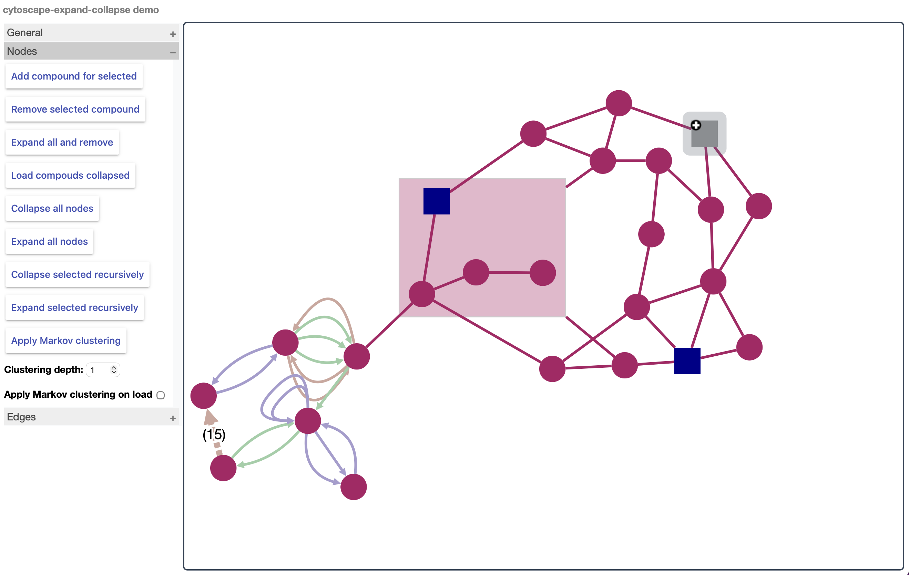

Semantic Cartography:
Enabling Evolutionary PLM Interoperability
in Sovereign Data Spaces
Airbus Defence & Space
UMR 5205 CNRS / Université Lyon 1
nicolas.figay@airbus.com
UMR 5205 CNRS
INSA Lyon / Université Lyon 1
parisa.ghodous@univ-lyon1.fr
1. Industrial Context
Extended enterprise product development
- OEMs, suppliers, certification authorities — multi-decade lifecycles
- Cross-discipline exchange: geometry, tolerances, configuration management, functional/logical architectures
- PLM standards: ISO STEP AP242 (3D engineering), AP239 (lifecycle support)
- MBSE: SysML, Arcadia/Capella — largely isolated from PLM geometric and manufacturing data
Emergence of sovereign data platforms
- Gaia-X, Catena-X, DecadeX (aerospace & defence)
- Governed federated sharing via RDF, OWL, SHACL, DCAT + usage policies (ODRL)
Sovereign platforms ensure technical-layer interoperability.
They do not ensure semantic consistency of exchanged engineering payloads.
Two partners may exchange STEP AP242 files governed by identical ODRL policies yet interpret assembly constraints differently.
2. Research Problem
Limitation 1 — Semantic consistency
Sovereign data spaces provide technical-layer interoperability. They do not address semantic consistency of engineering payloads across heterogeneous formats (STEP, SysML, ArchiMate).
Limitation 2 — "RDFize everything"
Translating legacy engineering standards into OWL faces a fundamental trade-off:
- Complex modular systems require higher-order logic
- OWL 2 expressiveness–decidability trade-offs → either non-decidable ontologies or semantically lossy translations
Legacy PLM standards remain opaque artifacts in sovereign data space architectures — with governed access but without explorable semantics for the architects who must govern multi-year transformations.
- ATHENA, CRESCENDO, IMAGINE, PLM Hub Testbed, cPlatform (FP5–FP7)
- Airbus Phénix PLM harmonisation, DDMS
- ISO TC 184/SC 4 standards contributions
3. Research Question & Scope
Operational framing
- COI — maintaining interoperability through continuous change [Figay, 2020]
- FIF — Federative Interoperability Framework [Vernadat et al., 2025]
- EH4I — Enterprise Hypermodel for Interoperability
Methodological positioning
- Design Science Research
- Artefact construction precedes controlled validation
- Contribution: conceptual paradigm + proof of technical feasibility
- Evaluation: exploratory, qualitative
4. Related Work — Interoperability Frameworks
Scope of the challenge
- 36 interoperability types, 117 distinct definitions [Maciel et al., 2023]
- 77 challenges across 6 levels (technical, syntactic, semantic, pragmatic, dynamic, organisational) in DT-CPS [Acharya et al., 2024]
Existing frameworks
- ATHENA — ontology, MDA, enterprise modelling, SOA [Berre et al., 2007]
- FIF + EH4I/Hypermodel — formal interoperability, continuous change [Vernadat et al., 2025]
- Formal semantic alignment (ontologies, mappings)
- Technical integration (APIs, middleware)
- Standards compatibility and governance alignment
The cognitive challenge of visually representing multi-standard, multi-stakeholder system-of-systems complexity.
Neither challenge-mapping studies nor FIF/Hypermodel identify the absence of advanced interactive compound graph visualization as an operational impediment. This is a methodological blind spot — not an oversight.
5. Related Work — Visualization Tools
Modelling language tools
- UML, SysML, ArchiMate — designed for static diagrams
- Separate model explorer (tree view) / diagramming canvas / graph explorer
- No fluid interactive navigation across decomposition levels
- No compound graph semantic zooming
Linked Data and graph database visualizers
- Non-hierarchical "hairball" graphs
- No interactive compound graph navigation for large digital business ecosystems
Katifori et al. (2019). Ontology visualization: A survey. Knowledge Engineering Review 34, e10 — confirms absence of dynamic compound graph visualization techniques.
Cytoscape.js [Franz et al., 2016] + Dogrusoz et al. plugins:
- Compound graph theory with nested nodes
- fCoSE — fast layout with constraint support, animated transitions
- expand/collapse — selective animated hierarchical navigation
But: no semantic typing of nodes and edges according to visual modelling language specifications
6. The Identified Gap
Hierarchical, nested, interactive expand/collapse with animated layout
Types and rendering rules derived from established visual language specifications
STEP, OWL/DCAT, ArchiMate in one unified cognitive space
7. Applied Semantic Cartography — Definition
Semantization of a compound graph by deriving types and rendering rules from a visual language specification, while preserving underlying formal semantics in their native frameworks (OWL axioms, STEP schemas, ArchiMate metamodel).
What ASC is
- A cognitive layer over heterogeneous formal standards
- A unified interactive space where evolution pathways become comprehensible to architects
- An instrument for visual semantic coherence — seeing and interacting with cross-standard relationships
Key distinction
ASC does not replace OWL, STEP, or ArchiMate. It provides the navigational and cognitive infrastructure these standards do not themselves supply.
What ASC is not
- Not a new semantic standard
- Not a translation layer or middleware
- Not a replacement for formal ontological alignment
Interoperability challenges are not merely technical problems solvable through standardisation, but wicked problems requiring continuous stakeholder alignment across business, architectural and technical domains — the cognitive dimension must be addressed, not assumed.
8. Technical Foundations
Compound graph foundation (existing)
- Cytoscape.js — graph theory library: traversal, centrality, clustering, compound node support
- fCoSE [Balci & Dogrusoz, 2022] — fast compound graph layout with constraint support, animated transitions (FCose)
- expand/collapse plugin — selective animated hierarchical navigation
Graph model extension
Standard graph model extended: a node may reference a parent node as an object property → enables compound containment of arbitrary depth.
Rendering engine applies a set of rules on graph element data to determine visual representation (shape, color, dash pattern, icon, background image).
Semantization layer (contribution)
- Type system derived from visual language specification
- Rendering rules engine: type → symbol according to language specification
- Infographic rules: colors, line weights, dash patterns based on data attributes of related/containing/contained elements
Graph analytics (Cytoscape.js network algorithms) + animated compound visualization + semantic typing = a capability absent from existing tools.
9. The Semantization Process
From language specification to rendering
Illustrated with ArchiMate 3.2 as primary case:
- Extract node construct types
business-actor, application-component, technology-node, data-object… - Extract relationship types
association, aggregation, realization, serving, triggering, flow… - Derive rendering rules
shape, color, icon, line weight, dash pattern per type - Formal semantics (ArchiMate metamodel) remain in native framework — not replicated
Import / Export
- Import: ArchiMate Open Exchange Format [The Open Group, 2016]
- Export: CSV, OWL
- Identifiers preserved throughout — enabling cross-tool traceability
- OWL / SHACL / DCAT — sovereign data hub languages
- ISO STEP Part 11 (EXPRESS schema) and Part 21 (exchange format)
- Feasibility of semantization demonstrated in all three cases
10. Compound Graph — Visual Properties

Properties demonstrated
- Containment — arbitrary nesting depth; collapsed container aggregates subtree with count badge
- Semantic typing — node shape and color encode construct type per language specification
- Cross-boundary edges — relationships span containers and standards
- Visual anomaly detection — orphaned nodes signal missing traceability links, identifiable without textual search
ivis-at-bilkent.github.io/cytoscape.js-fcose
ivis-at-bilkent.github.io/cytoscape.js-expand-collapse
11. Prototype Implementation — Architecture
Technical choices
- Pure JavaScript — Cytoscape.js + plugins
- Browser-based — no server, no executable, no installation
- Web client standards only: JavaScript, JSON, DOM, CSS, XSLT
Rationale for these choices
- Reproducibility — any researcher can inspect and run directly
- Deployment in extended enterprise contexts without infrastructure investment
- Pilot experimentation before committing to full-scale PLM migration
Three demonstrators realised
12. Demonstrator 1 — ArchiMate Semantic Cartography

Key distinction from ArchiMate tools
- Model explorer and canvas are merged in compound graph elements — no tree/canvas separation
- All data from heterogeneous enterprise platforms aggregated in graph elements
- Graph analytics (traversal, centrality, clustering) directly applicable to architectural models
- Simultaneous navigation of containment structures and relationship networks
Practical capability
- Impact analysis on shared components — visual containment navigation
- Detection of orphaned nodes = missing traceability links
- Identifiers preserved → cross-tool traceability
13. Demonstrator 2 — OWL Semantic Cartography (DProd)

What standard OWL viewers do not show
- Object and data properties with domains and ranges
- Datatype nodes and XSD bindings
- Logic expressions (restrictions, intersections)
- Import cross-references as navigable graph edges
- Annotation property structures and their targets
Case: OMG DProd 1.0 (ptc/25-02-01) — Data Products Ontology, directly relevant to sovereign data catalog architectures (DecadeX, DCAT-based).
14. Demonstrator 3 — STEP Part 21 & The Polyglot Opening

STEP Part 21 cartography
- Navigation of product model structures (assembly, geometry, tolerances, styles)
- Multi-select node type filtering (ctrl+click)
- Attribute inspection on node selection
- Scope limitation: exchange instances only; application activity models, reference models and EXPRESS schemas not yet addressed
The polyglot opening
The simultaneous multi-language cartography — STEP structures against OWL ontologies against DCAT/ODRL policies in one compound graph — is the next research step.
Individual semantizations are the necessary prerequisite. Identifiers are preserved throughout, enabling cross-map traceability.
15. Contributions
Theoretical
Practical
16. Limitations
17. Future Research Directions
Addressing identified limitations
- Semantic lenses and multi-view coordination for large-scale cartographies beyond current density thresholds
- Polyglot SC management — type system unification for multi-language compound graphs; ODRL policy integration
- OWL property differentiation — object properties, n-ary relations, logic expressions; improved readability
- Expanded STEP coverage — application activity models, reference models, EXPRESS schemas
Validation
- Controlled evaluation of navigation effort and cross-discipline misunderstanding detection
- Real-world validation on production MBSE and STEP AP242 scenarios
Formal extensions
- Category theory — formal systematic study of mapping types between cartographies and origins of visual representation elements
- Complementary representations: matrices (dependency analysis) and timelines (COI evolution tracking)
Integration with DecadeX — the European Data Space for Aerospace & Defence — as the natural production context for sovereign PLM interoperability combining ArchiMate, OWL/DCAT, and STEP.
18. Conclusion
ASC — cognitive layer for stakeholder comprehension, complementing formal semantic alignment
Demonstrated for ArchiMate, OWL, STEP Part 21 — browser-based, serverless, import/export across formats
Graduated transparency — legacy formats as black boxes when appropriate; semantic mappings selectively explored when needed
19. Call to Action — Join the Effort
Many forms of collaboration are welcome
Get in touch
Parisa Ghodous - parisa.ghodous@univ-lyon1.fr